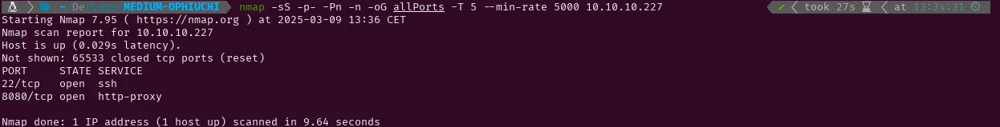
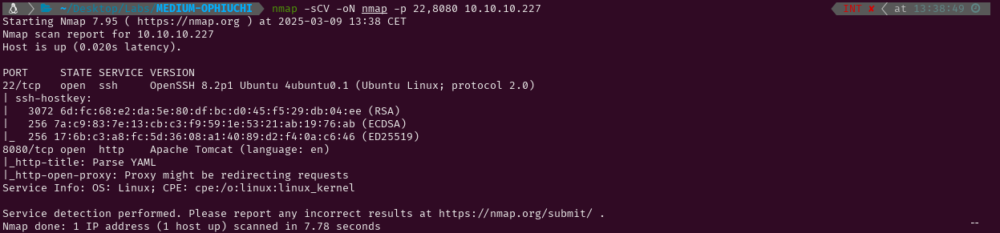

MEDIUM - OPHIUCHI
1. Recon
Nmap
nmap finds two open ports: SSH (22), and HTTP (8080).

The NSE (Nmap Scripting Engine) finds the following information:
- The box is using Ubuntu
- The version of the SSH service OpenSSH 8.2p1
- The web service is probably a YAML parser and it is using Apache Tomcat

Website - TCP 8080
The website is an online YAML parser. This reminds me of Time, where I gained remote code execution using an online JSON parser because it was using a vulnerable version of Jackson. So just as I did back then, I’m going to try generating an error to see what technology is being used. Using the same payload I used in Time to get RCE an exception is thrown and displayed. It seems that this YAML parser is using SnakeYAML.


Searching “snakeyaml deserialization” I find this article: SnakeYaml Deserilization exploited. Setting up a HTTP server in my kali and using the payload I have found in the article I manage to receive a request. The response is 404 because the client is looking for the file /META-INF/services/javax.script.ScriptEngineFactory.


2. Gaining Access
Inside the SnakeYAML deserialization article there is this GitHub repository link where I have found the needed folders to perform the attack. After cloning the content of the repository to my Kali I open the file /src/artsploit/AwesomeScriptEngineFactory.java and modify it to send a connection to my netcat listener. Then, I use javac to compile the .java file into a .class and create a jar file with /src. Now the files are ready and I can send the payload from the online parser. The netcat listener receives a connection from the target ip so the remote command execution has been successful.


Now I need to send a reverse shell instead of a simple connection so I can execute commands from a shell in my Kali. However, none of the reverse shells I have tried (I get them from this cheatsheet) have worked.

I will try downloading a script from my Kali with a reverse shell inside and execute it instead. After creating the script and modify /src/artsploit/AwesomeScriptEngineFactory.java to make the target download and run it, I send the payload again and a reverse shell spawns in my listener.


3. Privilege Escalation
Admin
While looking for the website directory I find that there isn’t anything under /var/www so I check /opt and find the tomcat directory. With a quick grep inside the config directory I find a password (whythereisalimit) for the user admin which successfully logs me into that account.

Root
Checking sudo -l I find that I have permissions to run /usr/bin/go run /opt/wasm-functions/index.go as sudo. Checking the code I see that it is trying to load main.wasm and if it returns 1 it loads deploy.sh.


After locating deploy.sh in the system I find it is in a directory wich also contains a main.wasm file. Running the binary (from both this folder and the backup folder) prints “Not ready to deploy”, which means that main.wasm is not returning 1. Trying to read main.wasm I see that it is not readable so I use google to find how to make it readable and find this StackOverflow question. The only answer to the question provides a GitHub repository wich contains a tool to make a wasm readable by converting it to wat.


After downloading and decompressing the tool, I send main.wasm to my Kali and make it readable. By reading this website I have understood that there is a function called info which returns 0. Reading index.go I see that the return of info is being compared in the if statement, so changing i32.const 0 to i32.const 1 should print “Ready to deploy” instead of “Not ready to deploy” once index.go is executed.


Once I have modified the .wat file I used wat2wasm to convert it back and send it to the target system. Executing it prints “Ready to deploy” now, so I will create a deploy.sh script that will be executed as root once I run index.go again. Doing this spawns a shell with root permissions in my netcat listener. Now I can grab the flags and submit them.